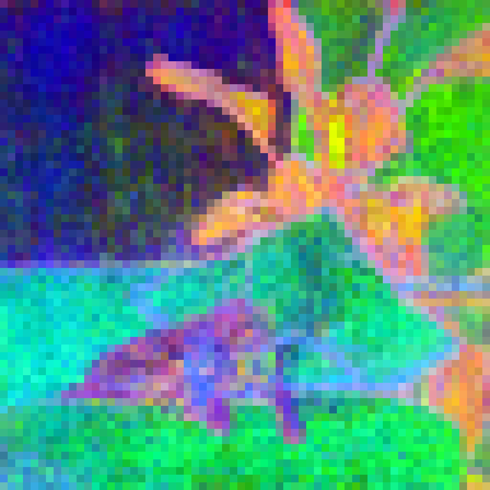
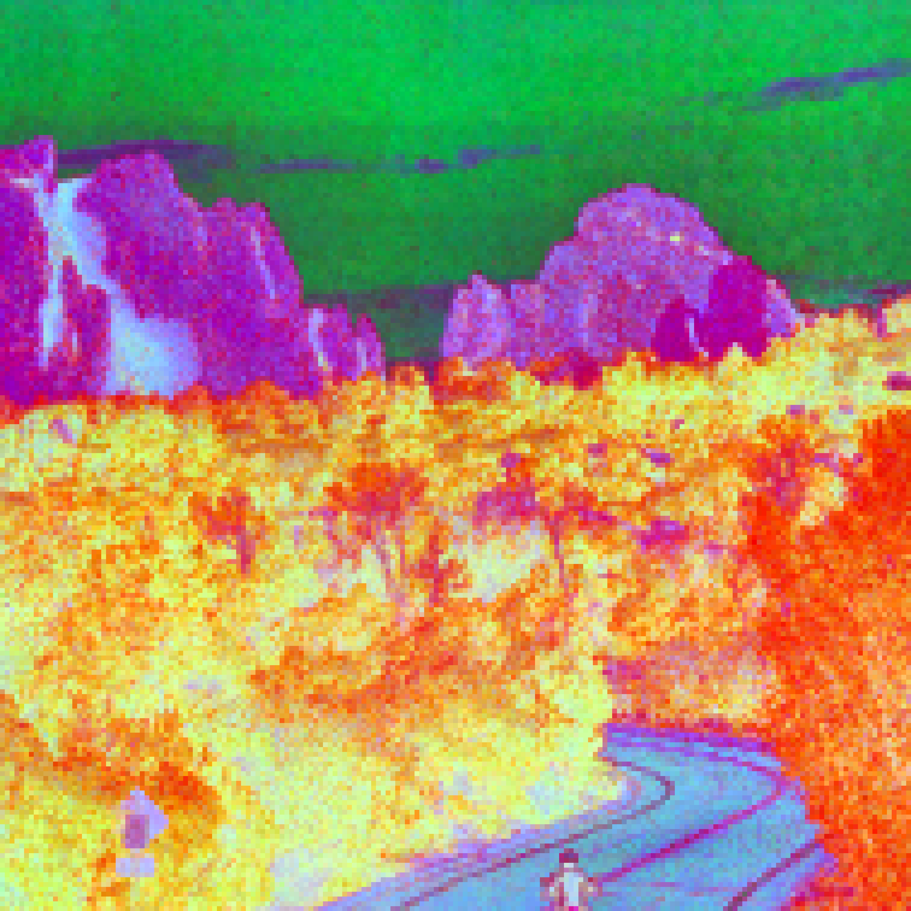
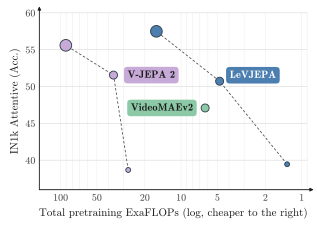

LeVJEPA: Efficient & Scalable Video Pretraining
without the Heuristics
*Equal advising. Correspondence:
lukas.kuhn@dkfz-heidelberg.de

InputPCA
InputPCA
Patch-token structure of a frozen ViT-L. Drag within either still to reveal the three leading
principal components of the patch-token representations, rendered as RGB; the clips show the corresponding
structure over time. Objects separate from their surroundings although the training objective supervises
only the clip-level [cls] token.
Abstract
Video provides an abundant, unannotated record of the temporal structure of the physical world, yet self-supervised learning from it has remained computationally costly. Prevailing joint-embedding methods preclude representation collapse through architectural asymmetry — an exponential-moving-average target encoder, a stop-gradient, and a capacity-limited predictor — while masked-autoencoding methods circumvent the question by reconstructing pixels through a dedicated decoder. We introduce LeVJEPA, the first video encoder trained under the collapse-free objective of LeJEPA, which requires neither. A single encoder is optimized with an invariance loss over global and local views of a clip, regularized by SIGReg, which precludes collapse under a provable guarantee. The trainable architecture reduces to an encoder and a projector, and the objective retains a single hyperparameter. At matched epochs on identical data, LeVJEPA matches or exceeds V-JEPA 2 across ViT-S/B/L at \(5.6\) to \(20.8\times\) lower total pretraining compute; at matched FLOPs it exceeds the strongest video baseline by \(7.6\) points on ImageNet-1K. Because no asymmetry between branches is required, the encoder admits block-causal attention at no measurable cost in accuracy, such that each frame representation depends only on past observations.
Objective and architecture
From each video we sample a clip of \(16\) frames and construct \(V+1\) views: one global view at full
resolution and \(V\) local views obtained by spatial cropping and photometric augmentation, all sharing an
identical temporal window. Every view is processed by the same encoder \(E_\theta\); a learnable
[cls] token provides the clip-level readout, which a projector maps to an embedding
\(z_v \in \mathbb{R}^{K}\).
The training objective is \(\mathcal{L} = \mathcal{L}_{\text{inv}} + \lambda\,\mathcal{L}_{\text{SIGReg}}\). The invariance term is the mean squared error between each local embedding and the global one; minimized in isolation it admits the constant solution. SIGReg excludes that solution by constraining the embedding distribution to an isotropic Gaussian, from which any collapsed configuration is maximally distant. By the Cramér–Wold theorem the constraint reduces to univariate goodness-of-fit tests along random directions, evaluated with the Epps–Pulley statistic at cost linear in batch size and embedding dimension.
The trade-off weight \(\lambda\) constitutes the objective's only hyperparameter. The trainable architecture comprises the encoder and projector alone; neither a predictor network nor a target encoder is instantiated.

[cls] embedding of each view.
Token dropping
A fraction \(\rho\) of the patch tokens of each view is discarded uniformly at random after patch embedding, and the retained tokens constitute the encoder's sole observation of the clip. Were this an approximation adopted for efficiency, accuracy would be expected to decline as \(\rho\) increases. The converse is observed: ImageNet-1K accuracy rises monotonically, from \(33.9\%\) at \(\rho = 0\) to \(47.6\%\) at \(\rho = 0.95\).
Token dropping therefore fulfills two functions. It reduces the cost of each forward pass by a factor of up to \((1-\rho)^{-1}\), and it constitutes a stochastic augmentation under which the clip-level embedding must be inferable from a sparse, randomly located sample of the clip.
39 of 784 tokens
The spatial arrangement of the retained set is equally consequential. A tube variant retaining identical spatial locations in every frame attains \(39.6\%\) against \(50.7\%\) for uniform random dropping, reversing the ordering established in masked video modeling.
Two further observations follow. Accuracy increases with the number of local views, from \(47.6\%\) at \(V = 4\) to \(50.2\%\) at \(V = 10\), so the results reported below do not exhaust the method. Temporal patch aggregation at the input, conventional in video transformers, proves unnecessary: at a matched token budget, per-frame tokenization attains \(50.7\%\) against \(47.4\%\) on ImageNet-1K and \(30.4\%\) against \(28.8\%\) on Something-Something-v2.
Block-causal attention
Because the objective imposes no asymmetry between branches, the attention topology of the encoder is unconstrained. We adopt a block-causal pattern in which patch tokens attend bidirectionally within their frame and causally across frames, such that each frame representation is a function of the current and preceding frames alone. Since causal masking removes future tokens from the receptive field of every token, a reduction in representation quality might reasonably be anticipated. No such reduction is observed.
| Attention | IN1K top-1 |
|---|---|
| Bidirectional | 50.7 |
| Block-causal | 51.2 |
Frozen attentive probe; both configurations use \(\tau = 1\), \(\rho = 0.95\), \(V = 4\), and uniform random dropping.
Patch-level representations
The objective supervises the clip-level [cls] token exclusively; patch tokens receive no direct
supervision and no auxiliary dense loss is applied. Semantically organized patch representations nevertheless
emerge. V-JEPA 2.1 obtains comparable structure through an explicitly introduced patch-level loss, and
V-JEPA 2, trained without such a loss, exhibits no comparable token-level organization.
The same behavior holds under a query-based readout. Cosine similarity between a patch placed on an object and all remaining patch tokens stays confined to that object rather than diffusing across the frame, indicating representations that are spatially precise as well as semantically grouped.
Because the encoder is block-causal, these maps are computed from the current and preceding frames alone, so the correspondence they express is maintained as the scene moves rather than recovered by attending forward in time.
Empirical comparison
To eliminate confounds in pretraining data, schedule, and compute, all baselines are retrained on an identical \(20\%\) subsample of K710 using their official implementations, for \(240\) epochs at an effective batch size of \(3{,}072\), with every encoder probed on an equal number of tokens.

Across all three encoder sizes LeVJEPA attains accuracy comparable to or exceeding V-JEPA 2 at a fraction of the total pretraining compute, the advantage ranging from \(5.6\times\) at ViT-L to \(20.8\times\) at ViT-S. At ViT-B the two methods are separated by less than one accuracy point, at \(4.8\) against \(36.4\) ExaFLOPs. Under a fixed total FLOP budget, the reduced per-sample cost admits a proportionally longer schedule of \(1{,}085\) epochs at \(V = 10\).
| Method | IN1K | SSv2 | K400 |
|---|---|---|---|
| VideoMAEv2 | 53.4 | 43.6 | 37.4 |
| V-JEPA 2 | 51.6 | 42.5 | 40.7 |
| LeVJEPA | 61.0 | 40.4 | 44.6 |
ViT-B encoders at equal total pretraining FLOPs, evaluated frozen. IN1K and SSv2 report attentive-probing top-1 accuracy; K400 reports linear probing on mean-pooled tokens, a strictly weaker adaptation.
Comparison with image pretraining
Image-based self-supervised learning has hitherto constituted the stronger paradigm for appearance-centric transfer. Training DINOv2 with its official implementation on individual frames of the same video data (\(11.7\)M frame samples over \(11{,}400\) optimizer steps) at equal total FLOPs, the image-pretrained encoder retains an advantage of \(3.1\) points on ImageNet-1K, while the video-pretrained encoder attains nearly twice its accuracy on Something-Something-v2.
| Method | IN1K | SSv2 |
|---|---|---|
| DINOv2 | 53.8 | 16.9 |
| LeVJEPA | 50.7 | 30.4 |
ViT-B encoders at equal total FLOPs on identical source data; frozen attentive probes.
Computational requirements and data scaling
The reduced per-sample cost lowers the hardware threshold for pretraining. A ViT-Tiny trained for \(12\) hours on a single consumer GPU on eight unannotated Walking Tours videos, approximately \(620\)k frames, improves from \(8.9\%\) to \(25.2\%\) ImageNet-1K top-1 under frozen evaluation.
Relaxing the \(20\%\) restriction, a ViT-L/16 pretrained for \(100\) epochs on the union of K710, Something-Something-v2, Walking Tours, and the PE Video Dataset attains \(67.5\%\) on ImageNet-1K and \(55.0\%\) on Something-Something-v2 under frozen attentive probing, within a shorter schedule and without modification to the objective or its single hyperparameter.
Cite
@misc{kuhn2026levjepaefficientscalable,
title={LeVJEPA: Efficient & Scalable Video Pretraining without the Heuristics},
author={Lukas Kuhn and Lucas Maes and Giuseppe Serra and Quentin Le Lidec and Yann LeCun and Randall Balestriero and Florian Buettner},
year={2026},
eprint={2608.27395},
archivePrefix={arXiv},
primaryClass={cs.CV},
url={https://arxiv.org/abs/2608.27395},
}